相圖
📌 核心問題
為什麼食鹽在水中溶解有上限，但酒精和水可任意混合？為什麼鋼加熱到 727°C 以上結構會突然改變？如何從一張相圖中讀出：在什麼溫度下有哪些相、各相的成分和比例？本章是材料科學的「地圖閱讀」課程——相圖告訴你材料在不同溫度和成分下的相狀態。Fe–Fe₃C 相圖是鋼鐵工業的聖經。
🔑 關鍵概念
- Gibbs 相律：$F = C - P + 1$（定壓）——決定自由度
- 二元同晶（Cu-Ni）：液固完全互溶。槓桿定律計算相比例
- 二元共晶（Pb-Sn）：$L \rightarrow \alpha + \beta$——焊料合金的基礎
- Fe–Fe₃C：共析 $\gamma \rightarrow \alpha + \text{Fe}_3\text{C}$（波來鐵）——鋼鐵熱處理核心
- 槓桿定律：$W_L = (C_\alpha - C_0)/(C_\alpha - C_L)$
🧭 本章推理地圖
- 系統在指定溫度、壓力與總成分下傾向降低 Gibbs 自由能（§9.2、§9.17）→ 決定平衡時可共存的相（§9.2–§9.3）。
- 把各條件下的平衡相整理成相圖（§9.1–§9.4）→ 給定溫度與成分即可判斷「有哪些相」（§9.4、§9.7）。
- 在兩相區畫等溫連線（§9.4）→ 交點給出各相成分（§9.4）→ 槓桿定律求各相比例（§9.5）。
- 沿冷卻路徑跨越相界（§9.6–§9.7）→ 相的種類、成分與比例改變 → 形成微觀組織（§9.8、§9.12、§9.19）。
- Fe–Fe₃C 相圖預測平衡終態與轉變溫度（§9.18–§9.20），但不含轉變速度 → 須結合相變動力學（Ch10）。
先備知識橋接
- Ch4 §4.4：wt% 與 at% 的換算——相圖的成分軸是 wt%（對 Fe–C），但槓桿定律計算相比例可能需轉換
- Ch4 §4.3：固溶體與 Hume-Rothery 規則——決定兩種金屬能否形成廣泛固溶（同晶型相圖）的基礎
- Ch5：擴散——相圖是平衡的，但達到平衡需要擴散。冷卻速率 > 擴散速率 → 非平衡微觀結構
- 熱力學基本概念：Gibbs 自由能 $G = H - TS$——相圖中的相邊界來自各相自由能隨溫度和成分的變化曲線的公切線交點
9.1 相圖的基本概念與溶解度極限
先辨認座標與條件：二元相圖通常以溫度和總成分為軸，並假設壓力固定、系統達平衡。溶解度極限是某溫度下一相可容納的最大溶質量；超過後多餘成分不是「消失」，而是形成另一相。相圖不直接告訴轉變速度，也不等於實際快速冷卻組織。
一杯糖水在室溫下只能溶解一定量的糖——超過這個量，多餘的糖會沉澱在杯底。這個「最大溶解量」就是溶解極限（solubility limit）。在材料科學中，溶解極限是溫度的函數——通常溫度愈高，溶解極限愈大（糖在熱水中比在冷水中溶解更多）。相圖（phase diagram）就是以圖形方式呈現「在什麼溫度和成分下，存在哪些相」——它是材料科學中最重要的「地圖」。
相（phase）是系統中具有均勻物理和化學性質的區域——例如糖水是單相（液體溶液），糖水+未溶解的糖晶體是兩相（液體溶液+固體糖）。相圖告訴我們：(1) 在給定溫度和成分下存在哪些相；(2) 各相的成分是什麼；(3) 各相的比例是多少。這三個問題的答案構成了所有熱處理的理論基礎。
9.2 相、微觀結構與相平衡
相與微觀結構層次不同：相是成分、結構與性質近似均勻的區域；微觀結構還包含各相的尺寸、形貌、分布與取向。兩個材料可具有相同相分率，卻因層片間距或顆粒分布不同而展現完全不同的強度與韌性。
「相」和「微觀結構」是兩個不同層次的概念。相是熱力學概念（如 FCC 的 α-肥粒鐵、BCC 的 γ-沃斯田鐵），微觀結構是相的空間排列——包括晶粒大小、相的形狀（層狀、球狀、網狀）、相的分布。同樣的兩個相（α + Fe₃C），可以有多種微觀結構：層狀波來鐵（α 和 Fe₃C 交替排列）、球化組織（球狀 Fe₃C 散布在 α 基材中）、網狀雪明碳鐵（Fe₃C 沿 α 晶界形成連續薄膜）。微觀結構決定了材料的力學性質，而相圖決定了在平衡條件下可能存在哪些微觀結構。
平衡態是系統 Gibbs 自由能最低的狀態。但許多重要的工程材料處於亞穩態（metastable）——因為動力學限制（擴散太慢）阻止了它們轉變為真正的平衡態。室溫下的鋼就是亞穩態——Fe₃C 最終會分解為 Fe + 石墨（真正的平衡態），但這個反應在室溫的速率為零。
9.3 單元相圖與 Gibbs 相律
自由度是可獨立調整的變數數目：單元系統在固定壓力下，一相區可改變溫度而不改變相數；兩相共存時溫度被固定。三相點因此是不變點。相律只判斷平衡的可能性，不告訴相的比例或達到平衡所需時間。
Gibbs 相律是理解相圖結構的鑰匙。定壓版本（大多數材料製程在常壓進行）：$F = C - P + 1$。$C$ = 組元數，$P$ = 平衡共存的相數，$F$ = 自由度（可獨立改變的強度變數——通常是溫度和成分）。
對於二元系統（$C=2$）：單相區 $F = 2-1+1 = 2$——可同時改變溫度和成分而不離開該相區。兩相區 $F = 2-2+1 = 1$——只有一個自由度：改變溫度就固定了兩相的成分（反之亦然）。這就是為什麼兩相區中必須用等溫線（tie line）來找各相成分。三相共存 $F = 2-3+1 = 0$——無自由度：溫度和各相成分完全固定。這對應於相圖上的不變反應（invariant reaction）：共晶、共析、包晶。Gibbs 相律的實用性：你可以用它來檢查你對相圖的解讀是否合理——兩相區不應該出現可變的相成分。
9.4 二元同晶型系統——Cu-Ni 的完全互溶
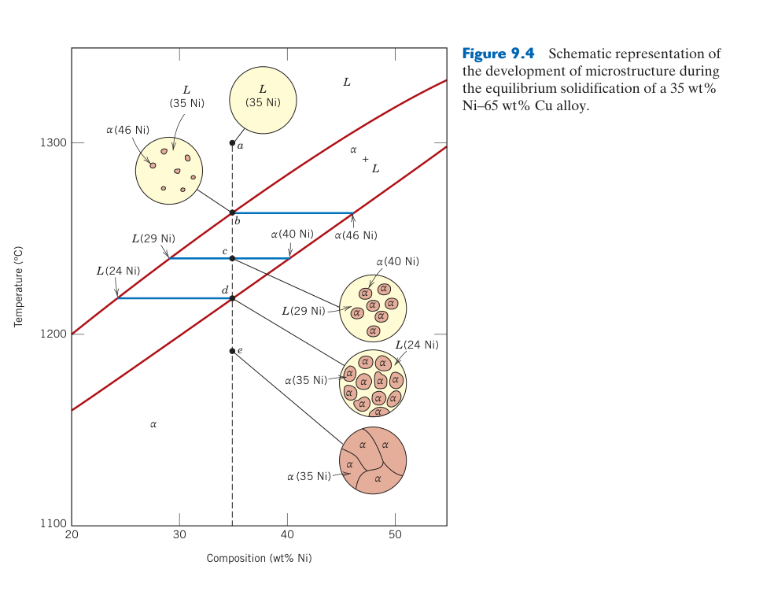
液相線與固相線回答不同問題：冷卻時碰到液相線開始析出固體，通過固相線才完全凝固；兩線之間同時存在液相與固溶體。連線端點給兩相各自成分，不能把合金總成分誤當成每一相的成分。
Cu-Ni 系統是同晶型（isomorphous）相圖的典範——兩者在液態和固態都完全互溶，形成單一的 FCC 固溶體。相圖特徵：液相線（liquidus）以上全部液體，固相線（solidus）以下全部固體，兩線之間為 $L+\alpha$ 兩相區。從液態冷卻時，首先凝固的固體富含高熔點組元（Ni，熔點 1455°C，高於 Cu 的 1085°C）——固相線的形狀反映了這個規律。
平衡冷卻（極慢）時，固體內部的擴散能跟得上冷卻速率 → 固體均勻。但實際鑄造冷卻速率遠快於固態擴散 → 每個晶粒的中心（先凝固，富 Ni）與外層（後凝固，富 Cu）成分不同——核心偏析（coring）。均質化退火可消除核心偏析。
9.5 槓桿定律——計算兩相區中各相的比例
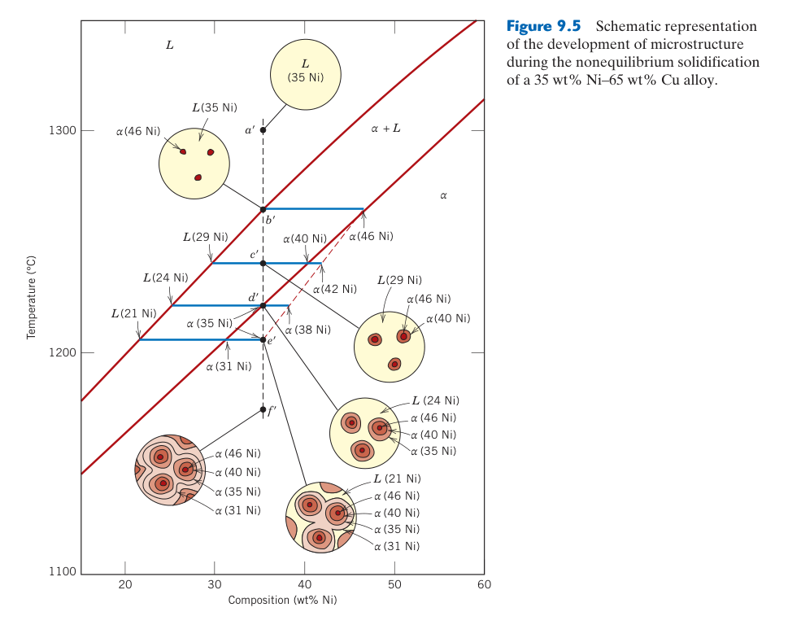
槓桿定律源自質量守恆：某相分率等於總成分點到「另一相端點」的線段長度除以整條連線長度。它只適用於指定溫度的兩相平衡區；成分單位須一致，端點必須由同一條水平連線讀取，而且求得的是質量分率還是莫耳分率取決於橫軸定義。
在兩相區中，槓桿定律（lever rule）計算各相的質量分率：$W_L = (C_\alpha - C_0)/(C_\alpha - C_L)$，$W_\alpha = (C_0 - C_L)/(C_\alpha - C_L)$。$C_0$ 是總合金成分——槓桿的支點；$C_L$ 和 $C_\alpha$ 是等溫線（tie line）與液相線和固相線交點的成分——槓桿的兩端。液相的重量正比於「遠離液相的臂長」（$C_\alpha - C_0$）除以總臂長（$C_\alpha - C_L$）。
槓桿定律的物理基礎是質量守恆：總質量 = 液相質量 + 固相質量；總溶質質量 = 液相的溶質質量 + 固相的溶質質量。解這兩個聯立方程即得槓桿定律。記住：先找成分，再算比例——不要在單相區使用槓桿定律（單相區的成分就是總合金成分，比例是 100%）。
9.6 冷卻曲線——相變化的熱足跡
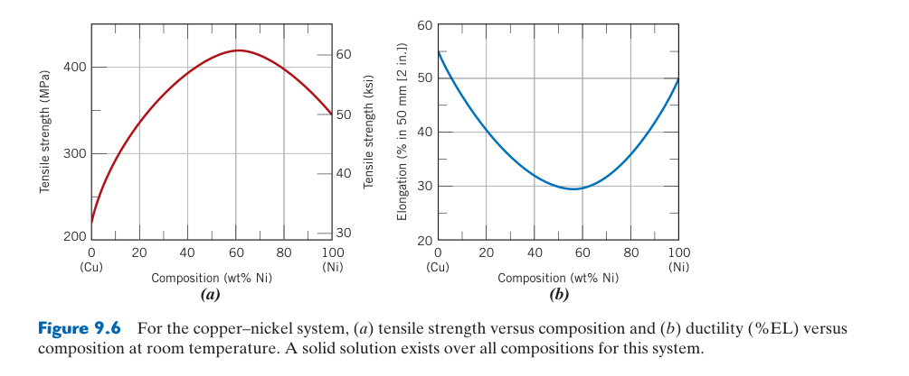
平台與斜率改變來自潛熱：純物質或不變反應在固定溫度釋放潛熱，可形成明顯停滯；合金在一段溫度範圍凝固時，曲線通常只是斜率改變。實驗曲線還受試樣質量、散熱、過冷與儀器響應影響，不能只憑平台高度直接判斷相分率。
冷卻曲線（溫度 vs 時間，在恆定熱移除速率下）是測定相圖的實驗基礎。純金屬凝固時，溫度保持恆定（平台）——因為凝固潛熱的精確補償了熱移除（$F = 1-2+1=0$）。固溶體合金通過兩相區時，$F=1$ → 溫度持續下降但斜率改變（因為固相的析出釋放凝固潛熱 → 降低冷卻速率）。斜率變化的兩個點對應液相線和固相線溫度。共晶合金在共晶溫度有熱停滯——因為 $L \rightarrow \alpha+\beta$ 時 $F=0$。熱分析（DTA/DSC）測量這些熱信號 → 構建相圖。
9.7 共晶系統——Pb-Sn 焊料的基礎
共晶點同時指定成分與溫度：在該點液相以不變反應 $L\rightarrow\alpha+\beta$ 轉變。亞共晶合金先析出初晶 $\alpha$，過共晶先析出初晶 $\beta$，剩餘液體最後才形成共晶混合物；因此「含有共晶組織」不代表整體成分就是共晶成分。
共晶（eutectic，希臘文「容易熔化」）反應是：$L \rightarrow \alpha + \beta$——液體在最低熔點同時凝固為兩種固相的機械混合物。Pb-Sn 系統是二元共晶的典範：共晶成分 61.9% Sn，共晶溫度 183°C（顯著低於純 Pb 327°C 和純 Sn 232°C）。
不同成分的合金冷卻後得到不同的微觀結構：亞共晶（hypoeutectic，<61.9% Sn）——先析出初晶 α（富 Pb），剩餘液體在 183°C 進行共晶反應 → 微觀結構 = 初晶 α 樹枝晶 + 層狀共晶（α+β）。共晶（61.9% Sn）——在 183°C 全部液體同時轉變為 100% 層狀共晶結構（α 和 β 交替排列的條紋）。過共晶（hypereutectic，>61.9% Sn）——先析出初晶 β（富 Sn），剩餘液體進行共晶反應。
9.8 共晶微觀結構——層狀間距與冷卻速率的關係
層狀結構縮短擴散距離：共晶兩相需協同成長並分配溶質，交替層片讓原子只需在短距離內重新分布。冷卻越快，為維持成長所需的過冷度越大，通常得到更細層片；細化可提高強度，但過快凝固也可能帶來偏析、亞穩相與殘留應力。
層狀共晶的層間距由過冷度決定：$\lambda \propto 1/\Delta T$。快冷 → 過冷度大 → $\lambda$ 小 → 擴散距離短 → 層狀更細。層間距與強度的關係類似 Hall-Petch：$\sigma_y \propto \lambda^{-1/2}$——因為相界面阻擋差排，就像晶界一樣。快速凝固（熔紡、霧化製粉）可產生奈米級層狀共晶，強度遠高於傳統鑄造共晶。
當兩相體積分率相近時形成層狀；當一相體積分率很小時（<10%），該相以纖維狀嵌入基材；當兩相無明確優選成長方向時，形成不規則共晶。共晶微觀結構的控制是鑄造合金設計的核心——Al-Si 鑄造合金的共晶 Si 形態（針狀 vs 纖維狀 vs 球狀）決定了延性和強度。
9.9 其他三相不變反應——包晶、包析、偏晶
用參與相態辨認反應：包晶為液相與一固相生成另一固相，包析則是兩固相生成新固相，偏晶涉及兩個互不相溶液相。實際包晶反應常受新相包覆原固相後的長距離擴散限制，冷卻後可能保留未反應核心，與平衡相圖預測有差異。
除了共晶和共析，還有三種重要的三相不變反應：(1) 包晶（peritectic）——$L + \alpha \rightarrow \beta$，液體與先前凝固的固相反應形成新固相。Fe–C 系統的包晶反應（1495°C）：$L(0.53\%C) + \delta(0.09\%C) \rightarrow \gamma(0.17\%C)$。包晶反應對連鑄極其重要——包晶鋼（0.09–0.17% C）凝固時經歷 $\delta \rightarrow \gamma$ 體積收縮 → 鑄坯表面裂紋。
(2) 包析（peritectoid）——$\alpha + \beta \rightarrow \gamma$，兩個固相反應形成第三固相（固態包晶），在 Ti-Al 和 Cu-Zn 系統中常見。(3) 偏晶（monotectic）——$L_1 \rightarrow L_2 + \alpha$，一種液體分解為另一種液體+固體。Cu-Pb 軸承合金利用偏晶反應——富 Pb 液滴均勻散布在 Cu 基材中，形成自潤滑微觀結構。
9.10 無鉛焊料——相圖知識的工程應用（Materials of Importance）
熔點不是唯一選材指標：無鉛焊料還要考慮潤濕、界面金屬間化合物成長、熱疲勞、蠕變與元素成本。焊接熱循環會使界面反應層持續增厚；太薄可能接合不足，太厚又可能脆化，因此相圖必須與擴散動力學和服役循環一起使用。
傳統 Pb-Sn 焊料（共晶 183°C）因鉛毒性被淘汰。替代方案 Sn-Ag-Cu（SAC 合金，~217°C）的挑戰：熔點較高可能損壞電子零件、錫鬚自發生長可能短路。無鉛焊料的開發正是相圖知識的工程應用。
9.11 中間相與金屬間化合物
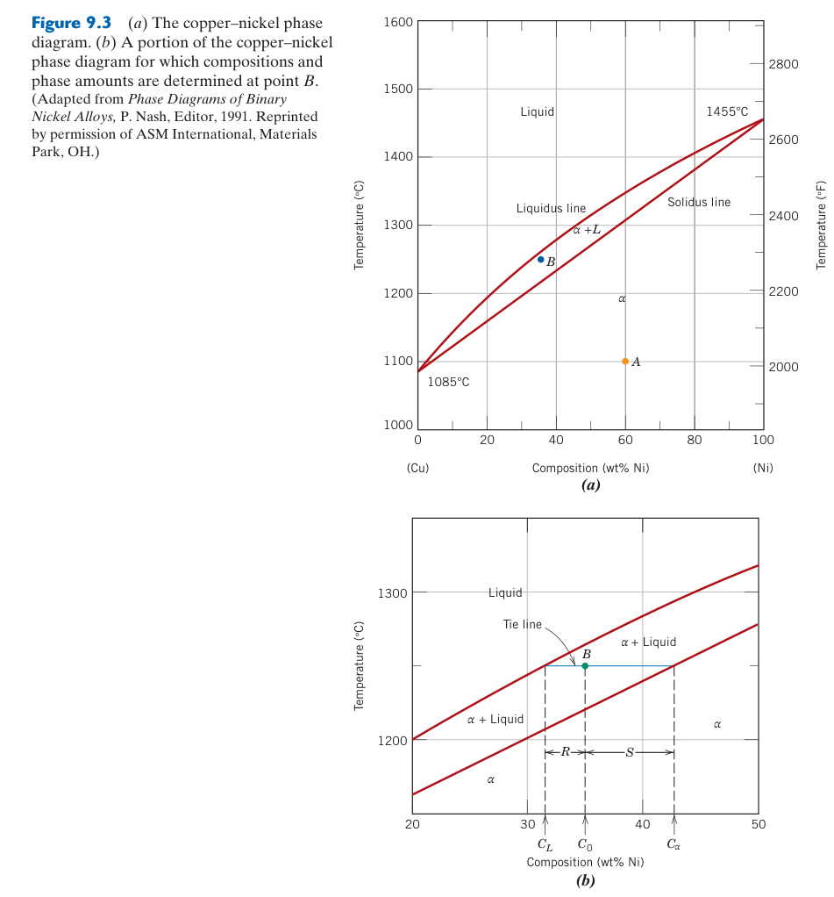
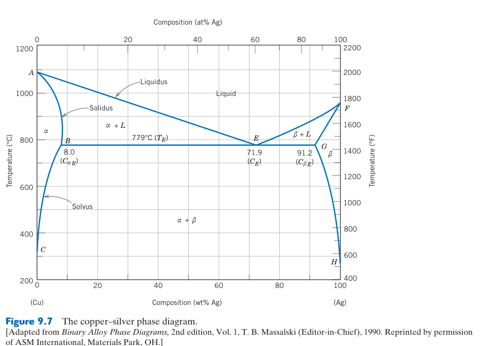
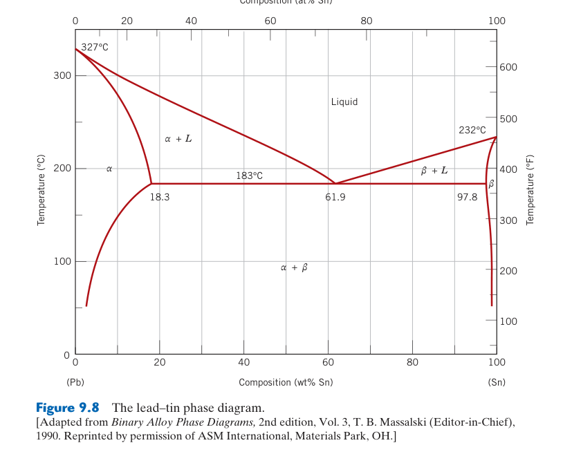
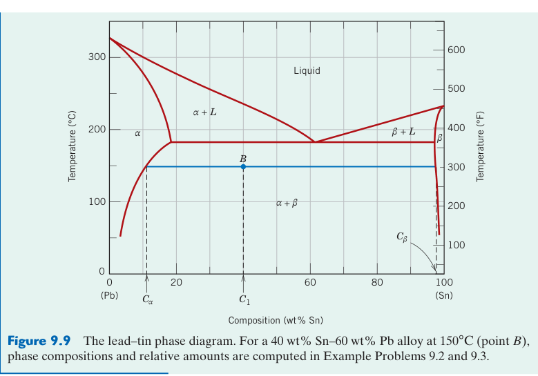
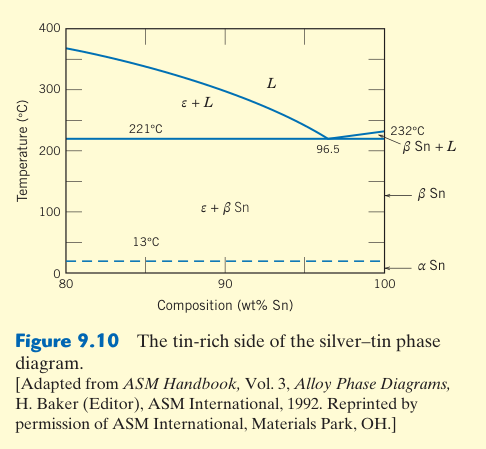
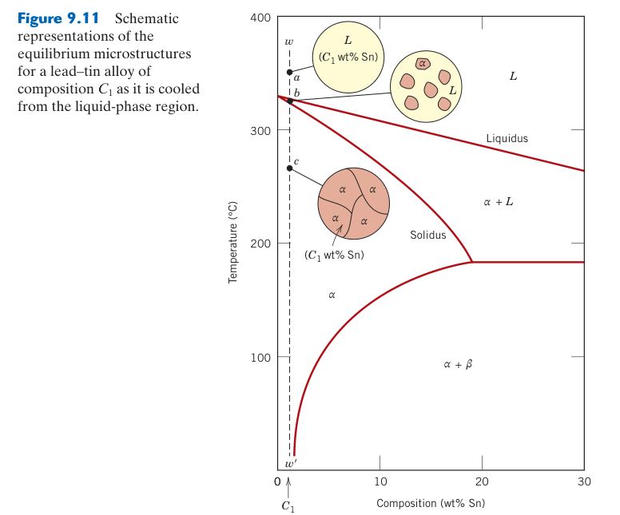
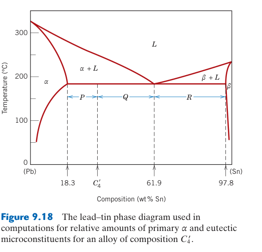
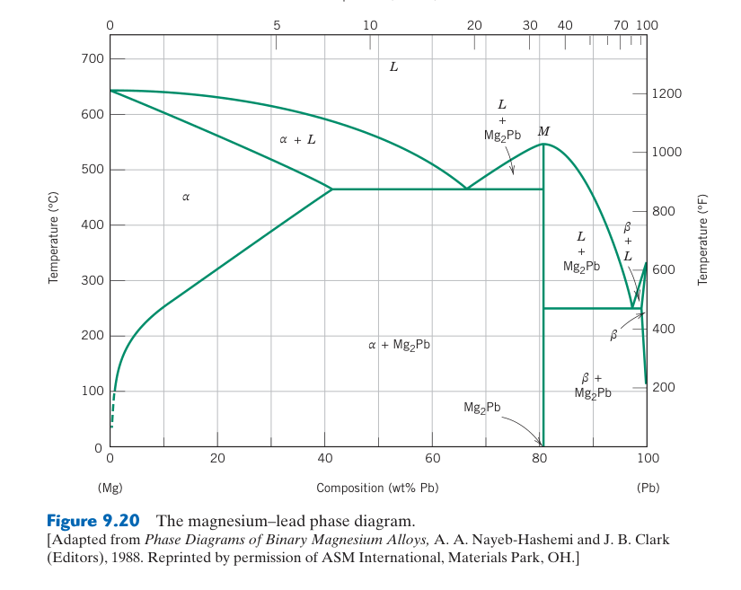
窄成分範圍來自有序占位：金屬間化合物常具有特定晶格位置與近化學計量比，強鍵結與有序結構可帶來高硬度、高熔點或功能性，也常降低室溫延性。相圖上的狹窄相區不一定是完全固定成分，仍可能透過空位或反位缺陷容納小範圍偏離。
並非所有二元系統都是簡單的完全互溶或共晶——許多系統形成中間相（intermediate phase），其晶體結構不同於任一純組元的結構。Mg-Pb 系統是經典範例：Mg₂Pb（螢石結構）有固定成分，極硬極脆——連續晶界薄膜導致沿晶脆斷。電子化合物（Hume-Rothery 相）的晶體結構由價電子濃度（VEC）決定——例如 Cu-Zn 系統：VEC≈1.5→BCC β-黃銅，VEC≈1.62→複雜立方 γ-黃銅（52 原子/晶胞），VEC≈1.75→HCP ε-黃銅。
金屬間化合物既是強化相（Ni₃Al 在鎳超合金中提供高溫強度）也是脆性有害相（焊接中的脆性金屬間化合物）。關鍵是形態控制：細小、均勻散布的球狀 → 強化；沿晶界的連續薄膜 → 脆化。
中間相與金屬間化合物
並非所有二元系統都是簡單的完全互溶或共晶——許多系統形成中間相（intermediate phase），其晶體結構不同於任一純組元的結構。中間相可以是有固定成分的金屬間化合物（intermetallic compound，如 Mg₂Pb 的窄垂直線），也可以是有一定成分範圍的中間固溶體（intermediate solid solution）。
Mg-Pb 系統是中間相的經典範例：Mg₂Pb 是固定的化學計量化合物（含 81 wt% Pb），熔點 ~550°C（遠高於純 Mg 650°C 和純 Pb 327°C）。Mg₂Pb 的晶體結構是螢石結構（CaF₂，Ch12），與 Mg（HCP）和 Pb（FCC）完全不同。Mg₂Pb 極硬極脆——如果它在晶界以連續薄膜析出，材料會沿晶界脆斷。這就是為什麼 Mg-Pb 合金在工程上用途有限——但在相圖教學中極具價值。
電子化合物（electron compounds，Hume-Rothery 相）是另一類重要的中間相：它們的晶體結構不是由原子尺寸決定，而是由價電子濃度（valence electron concentration, VEC = 價電子數/原子數）決定。例如 Cu-Zn 系統（黃銅）：VEC ≈ 1.5 → BCC 結構（β-黃銅，CuZn）；VEC ≈ 1.62 → 複雜立方 γ-黃銅（Cu₅Zn₈，52 個原子/晶胞！）；VEC ≈ 1.75 → HCP 結構（ε-黃銅）。Hume-Rothery 發現這些相的出現僅取決於 VEC，與組成元素的化學性質無關——這是電子結構決定晶體結構的早期證據。
金屬間化合物既是強化相（Ni₃Al 在鎳超合金中提供高溫強度）也是脆性有害相（焊接中的 TiFe₂ 或 ZrFe₂ 可能導致焊縫脆化）。關鍵是形態控制：細小、均勻散布的球狀金屬間化合物 → 強化（析出硬化）；沿晶界的連續薄膜狀金屬間化合物 → 脆化。這就是為什麼同樣的化合物（如 CuAl₂），在鋁合金中是寶貴的強化相，但在過量或不利形態時會變成災難。
9.12 共晶合金的微觀結構發展
分兩次使用槓桿定律：共晶溫度上方可先求初晶與剩餘液相比例；到共晶溫度時，再求共晶混合物內 $\alpha$ 與 $\beta$ 的比例。最終組織中的「初晶相總量」等於先析出部分加上共晶內同名相，不能把共晶組織比例誤當成某一相的總分率。
根據合金成分的不同，共晶系統的合金在緩慢冷卻時可產生四種不同的微觀結構。以 Pb-Sn 系統（圖 9.8）為例來逐一說明：
第一種情況——成分在室溫溶解極限以內（Pb-rich 端：0–2 wt% Sn；Sn-rich 端：99–100% Sn）。這類合金從液態冷卻時，穿過液相線後進入單相區（α 或 β），凝固為多晶固溶體，微觀結構為均勻的等軸晶粒——與同晶型系統（§9.4）完全相同，無共晶反應發生。
第二種情況——成分在室溫溶解極限與共晶溫度下的最大溶解極限之間（Pb-rich 端：2–18.3 wt% Sn）。以 10 wt% Sn 合金為例：冷卻時先在 α+L 兩相區析出初晶 α（富 Pb）；溫度降至室溫時，α 的固溶度從 18.3% Sn（183°C）降到 ~2%（室溫）→ 超過溶解極限的 Sn 以 β 相（富 Sn）的微細顆粒從 α 基材中析出——這種固態析出物通常極細小、散布在初晶晶粒內部。最終微觀結構：初晶 α 晶粒 + 晶粒內部的微細 β 析出物。
第三種情況——共晶成分（61.9 wt% Sn）。液體冷卻至 183°C 時，發生共晶反應：$L(61.9\%Sn) \rightarrow \alpha(18.3\%Sn) + \beta(97.8\%Sn)$。液體同時轉變為 α 和 β 兩相，形成特徵的層狀（lamellar）共晶結構——α 和 β 交替排列的條紋（類似指紋），層間距由冷卻速率決定（§9.8）。微觀結構為 100% 層狀共晶。
第四種情況——亞共晶或過共晶成分（18.3–61.9 wt% Sn 或 61.9–97.8 wt% Sn）。以 40 wt% Sn 的亞共晶合金為例：冷卻時先穿過 α+L 區 → 析出初晶 α 樹枝晶（dendrite）；剩餘液體成分沿液相線向共晶點移動；到達 183°C 時，剩餘液體（成分已達 61.9% Sn）進行共晶反應。最終微觀結構：初晶 α 樹枝晶 + 周圍的層狀共晶。槓桿定律可計算初晶 α 和共晶的比例。過共晶合金（如 80 wt% Sn）則先析出初晶 β，最後為初晶 β + 共晶。
實際冷卻速率有限時：①初晶晶粒內部產生核心偏析（coring）——晶粒中心（先凝固）與外部（後凝固）成分不同；②由於偏析，剩餘液體的平均成分可能在達到共晶點之前就穿過共晶水平線 → 在非共晶成分的合金中出現少量共晶結構（非平衡共晶）。這在鑄造合金中常見，可透過均質化退火消除。
無鉛焊料——Materials of Importance 9.1
焊料（solder）是用於連接電子元件的金屬合金。傳統的 Pb-Sn 焊料（63 wt% Sn–37 wt% Pb，共晶成分，熔點 183°C）因鉛的毒性正在被淘汰。無鉛替代方案主要為 Sn-Ag-Cu（SAC）系列合金，熔點約 217°C。挑戰包括：較高的熔點可能損壞熱敏感元件、以及錫鬚（tin whiskers）的自發生長可能導致短路。無鉛焊料的開發是相圖知識在工業中的直接應用。
9.13 含中間相或化合物的平衡圖
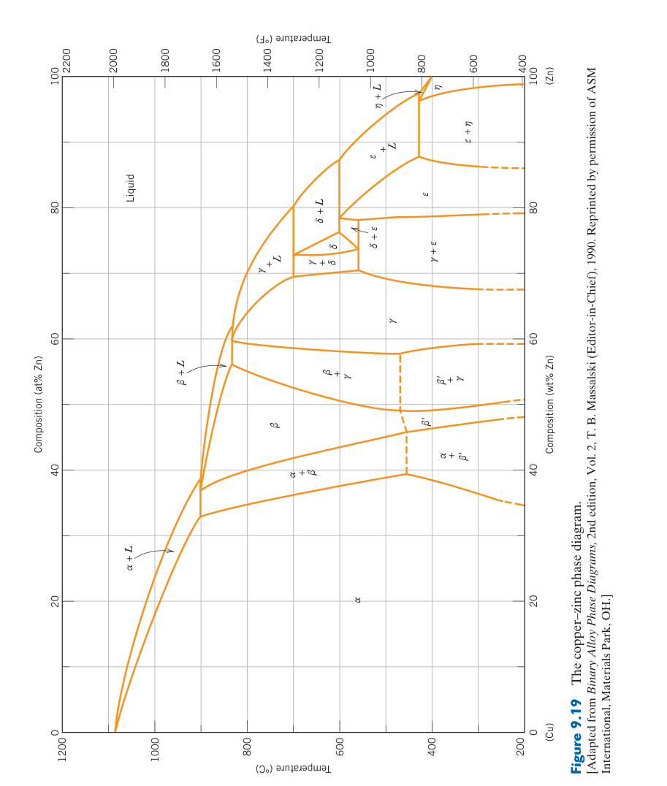
先判斷相區寬度：線化合物可近似固定成分，有限寬度的中間相則有同質範圍。兩相區仍用水平連線與槓桿定律，但端點可能落在中間相邊界而非純元素；計算前應先把化學式換成與橫軸一致的 wt% 或 at%。
並非所有二元系統都是終端固溶體+共晶那麼簡單。許多系統中出現中間相（intermediate phase）——其晶體結構與任一純組元都不同，在相圖上位於兩個終端固溶體之間。
Mg-Pb 系統（圖 9.20）是含中間相的經典範例。Mg₂Pb 是一個金屬間化合物（intermetallic compound）——成分固定（81 wt% Pb），熔點 ~550°C。Mg₂Pb 在相圖上以一條陡峭的垂直線表示（成分幾乎無範圍），其晶體結構為螢石結構（CaF₂ 型，§12.2）。Mg₂Pb 極硬極脆——若以連續薄膜沿晶界析出，材料將沿晶界脆斷。
中間相的兩個子類：(1) 化學計量中間相（stoichiometric）——成分固定或範圍極窄，如 Mg₂Pb、CuAl₂。在相圖上顯示為近乎垂直的線。(2) 非化學計量中間相（nonstoichiometric）——有一定成分範圍，即中間固溶體。例如 Cu-Zn 系統中的 β 相（BCC 結構）可在 ~45–50 wt% Zn 範圍內存在。中間相是否可作為有用的強化相，取決於其形態和分布——細小均勻散布 → 強化（析出硬化）；沿晶界連續薄膜 → 脆化。
9.14 共析與包晶反應
固態反應通常較慢：共析 $S_1\rightarrow S_2+S_3$ 全程發生於固態，需要成核與擴散，故組織高度依冷卻速率；包晶則包含液相，雖反應溫度固定，卻常因生成相包覆界面而無法完全。相圖只給終態，實際路徑需結合動力學。
除了共晶反應（液體→兩固體），還有兩種重要的三相不變反應：
共析反應（eutectoid reaction）——一個固相轉變為兩個不同的固相：$\gamma \rightarrow \alpha + \beta$。與共晶反應（起始相是液體）的關鍵區別在於：共析反應的起始相是固體，因此擴散更慢、反應速率由固態擴散控制。Cu-Zn 系統（黃銅）在 560°C、74 wt% Zn 處有一個共析反應：$\delta \rightarrow \gamma + \epsilon$。最重要的共析反應是 Fe–C 系統中的波來鐵轉變（§9.18）：$\gamma(0.76\%C) \rightarrow \alpha(0.022\%C) + \text{Fe}_3\text{C}(6.7\%C)$ 在 727°C——這是鋼鐵熱處理的核心。
包晶反應（peritectic reaction）——液體和一個已凝固的固相反應，形成第二個固相：$L + \alpha \rightarrow \beta$。Fe–C 系統中的包晶反應發生在 1495°C：$L(0.53\%C) + \delta(0.09\%C) \rightarrow \gamma(0.17\%C)$。包晶反應在連鑄中極其重要——包晶鋼（0.09–0.17% C）凝固時經歷 $\delta \rightarrow \gamma$ 的體積收縮，容易產生表面裂紋。
在相圖上，三種反應的「箭頭方向」不同：共晶 $L \rightarrow \alpha+\beta$（箭頭從液相線交點向下分叉）；共析 $\gamma \rightarrow \alpha+\beta$（箭頭從固相區向下分叉）；包晶 $L+\alpha \rightarrow \beta$（箭頭從液+固交界向下指向單一固相）。記住這個箭頭方向，就能一眼辨識相圖上的不變反應類型。
9.15 一致熔融與非一致熔融相變化
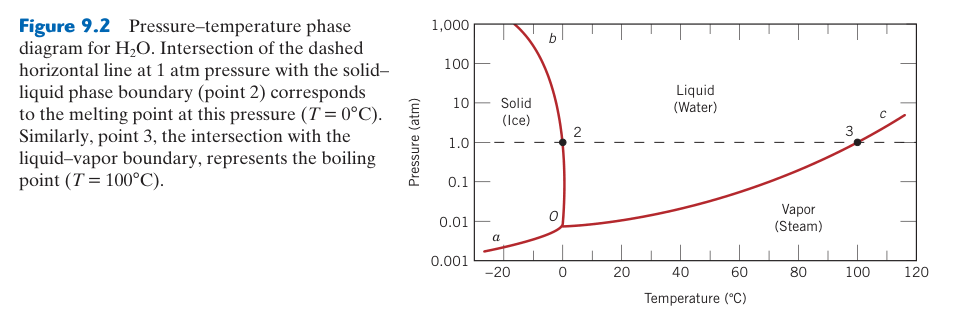
辨認化合物頂點：一致熔融時固體化合物直接熔成相同成分液體，相圖常出現液相線峰值；非一致熔融時加熱會分解成另一固相與不同成分液體，通常對應包晶反應。這會影響晶體生長、鑄造均勻性與可採用的熔煉路徑。
相變化可依成分是否改變分為兩類：(1) 一致熔融（congruent transformation）——相變前後各相的成分保持不變。包括：純金屬的熔融和凝固、同素異形轉變（如 FCC γ-Fe → BCC α-Fe，成分始終為純鐵）、以及某些中間相的熔融。例如 Mg₂Pb 在圖 9.20 的 M 點處加熱時直接熔融為相同成分的液體——一致熔融。(2) 非一致熔融（incongruent transformation）——至少一個相的成分在相變中發生變化。共晶反應中，液體成分（61.9% Sn）與兩個產物固相的成分（18.3% 和 97.8% Sn）都不同 → 非一致。同樣，共析和包晶也都是非一致相變化。
中間相也可依熔融行為分類：一致熔融中間相（如 Mg₂Pb）在相圖上有一個明確的熔點極大值（congruent melting point）；非一致熔融中間相（如 Cu-Zn 的 β 相）則透過包晶反應形成——即液體+一個固相反應產生該中間相。
9.16 陶瓷相圖與三元相圖入門
陶瓷需處理化合物成分：橫軸常以氧化物 wt% 或 mol% 表示，換算時必須包含氧的質量。三元等溫截面中任一點到三邊的垂直距離或平行線讀值總和為 100%；兩相區用連線、三相三角形用面積關係求比例。
相圖並非金屬系統的專利——陶瓷系統同樣有相圖，且對陶瓷的設計和加工同樣重要。例如 Al₂O₃–SiO₂ 系統的相圖指導了耐火材料的選擇，ZrO₂–Y₂O₃ 相圖是 YSZ（固態氧化物燃料電池電解質）的設計基礎。陶瓷相圖的詳細討論見 §12.7。
實際工程材料通常含三個或更多組元（如 Fe–C–Mn–Si 鋼）。三元相圖以Gibbs 等邊三角形表示三個組元的成分（三角形的每個頂點代表一個純組元，三角形內的任一點表示一個特定的三元成分），溫度作為垂直於三角形平面的第三軸——整個三元相圖是一個三維模型。三維的液相面（liquidus surface）取代了二元的液相線。
實務中最常用的三元相圖工具是：(1) 等溫截面（isothermal section）——在特定溫度下切過三維模型，顯示該溫度下各相的成分範圍；(2) 垂直截面（isopleth）——固定兩個組元的比例，畫出溫度 vs 第三組元成分的「假二元」相圖。垂直截面雖看似二元相圖，但不能使用槓桿定律（因為 tie line 不在截面平面內）。
9.17 Gibbs 相律——相平衡的熱力學基礎
先確認是否固定壓力：完整相律為 $F=C-P+2$，凝聚系統常因壓力固定而寫成 $F=C-P+1$。成分數 $C$ 是描述所有相所需的最少獨立化學成分，不一定等於元素數；有化學反應或化學計量限制時需扣除獨立約束。
Gibbs 相律是相平衡的熱力學基礎，由 J. Willard Gibbs 在 19 世紀提出。它的完整形式為：
對於大多數材料製程（在定壓下進行，只有溫度是可變的非成分變數），$N=1$，上式簡化為我們在 §9.3 中使用的形式：$P + F = C + 1$ 或 $F = C - P + 1$。
Gibbs 相律的實用價值在於驗證相圖解讀的合理性：二元單相區 → $F=2-1+1=2$（可獨立改變溫度和成分）✓；二元兩相區 → $F=2-2+1=1$（只有一個自由度——改變溫度即固定兩相成分）✓；二元三相共存 → $F=2-3+1=0$（無自由度——溫度、各相成分完全固定）→ 這就是不變反應（共晶、共析、包晶）。如果你對相圖的解讀得出的自由度與 Gibbs 相律不符，那你的解讀就是錯的——這是相圖分析的終極驗證工具。
相律給的是最大自由度——在某些特殊條件下（如相邊界上的點），實際自由度可能更少。另外，相律假設平衡狀態，對非平衡（如淬火麻田散鐵）不適用。初學者最常見的錯誤：在兩相區中用 Gibbs 相律算出 $F=1$，然後說「我可以同時改變溫度和成分」——錯了，$F=1$ 表示你只能改變一個變數（要麼改變溫度，此時成分自動確定；要麼改變成分，此時溫度自動確定）。
9.18 Fe–Fe₃C 相圖——鋼鐵工業的聖經
這是亞穩相圖：Fe–Fe₃C 圖把滲碳體視為穩定相，適合多數鋼的熱處理；真正平衡碳相是石墨，鑄鐵在高矽與慢冷條件下更接近穩定 Fe–C 圖。讀圖時還要區分 $\alpha$、$\gamma$、$\delta$ 鐵的晶體結構與碳溶解度。
Fe–Fe₃C 相圖的兩個關鍵不變反應：(1) 共晶（1147°C, 4.30 wt% C）：$L \rightarrow \gamma + \text{Fe}_3\text{C}$（萊氏體，ledeburite）；(2) 共析（727°C, 0.76 wt% C）：$\gamma \rightarrow \alpha + \text{Fe}_3\text{C}$（波來鐵，pearlite）。
鋼 vs 鑄鐵的分界：碳含量 2.14 wt% 是 γ 相的最大溶解度。碳 <2.14% → 鋼（可熱處理，可鍛造）；碳 >2.14% → 鑄鐵（含共晶萊氏體，只能鑄造）。三個關鍵溫度：A₁（727°C）——所有含 >0.022% C 的鋼在此發生共析反應；A₃——亞共析鋼加熱時肥粒鐵完全溶解的溫度（從 912°C 降到 727°C）；Acm——過共析鋼加熱時雪明碳鐵完全溶解的溫度。
Fe–石墨是真正的熱力學平衡，Fe–Fe₃C 是亞穩的。但一般冷卻下雪明碳鐵比石墨更易成核→大多數鋼鐵遵循 Fe–Fe₃C 圖。鑄鐵加 Si（>1 wt%）促進石墨化→灰口鑄鐵。
9.19 鋼的分類與緩冷微觀結構
先共析相與共析產物要分開：亞共析鋼先形成先共析肥粒鐵，剩餘沃斯田鐵在共析溫度形成波來鐵；過共析鋼先形成先共析滲碳體，再形成波來鐵。波來鐵本身是兩相微觀組織，不是相圖中的單一相。
鋼依碳含量分為三類，從沃斯田鐵區緩冷後的室溫微觀結構各不相同：(1) 亞共析鋼（<0.76% C，如 AISI 1020）——冷卻時先析出初析肥粒鐵（proeutectoid ferrite，沿原 γ 晶界成核），剩餘 γ 在 727°C 轉變為波來鐵。槓桿定律：$W_{\alpha\text{-pro}} = (0.76 - C_0)/(0.76 - 0.022)$。碳含量愈高 → 波來鐵比例愈高 → 更強更硬。0.2% C → 24% 波來鐵（軟鋼）；0.4% C → 50% 波來鐵（中碳鋼）；0.6% C → 75% 波來鐵（高碳鋼）。
(2) 共析鋼（0.76% C，AISI 1075）——冷卻至 727°C，全部 γ 同時轉變為 100% 波來鐵——肥粒鐵和雪明碳鐵的層狀交替結構（層間距取決於冷卻速率）。爐冷 → 粗波來鐵（~15 HRC）；空冷 → 細波來鐵（~25 HRC）。(3) 過共析鋼（0.76–2.14% C，如 AISI 52100）——先析出網狀雪明碳鐵沿原 γ 晶界，剩餘 γ 轉變為波來鐵。網狀雪明碳鐵極脆——必須進行球化退火（spheroidizing），將網狀轉化為球狀顆粒。
📝 自編概念例：從 Fe–C 相圖設計熱處理溫度
問題：AISI 1045 鋼（0.45 wt% C）需要完全退火。從相圖決定加熱溫度、冷卻後微觀結構、和各相比例。
解：A₃ 在 0.45% C 約為 790°C。加熱至 820°C（A₃+30°C）完全沃斯田鐵化。緩冷：初析肥粒鐵 + 波來鐵。$W_{\alpha\text{-pro}} = (0.76-0.45)/(0.76-0.022) = 42\%$，$W_{\text{pearlite}} = 58\%$。
9.20 合金元素對 Fe–C 相圖的影響
元素會改變相穩定與轉變速度：Ni、Mn 等常擴大沃斯田鐵區，Cr、Mo、Si 等傾向穩定肥粒鐵或形成碳化物；它們也會移動共析成分與溫度。更重要的是多數合金元素減慢擴散型轉變、提高淬透性，因此不能只用二元 Fe–C 平衡圖預測合金鋼熱處理結果。
所有合金元素都改變 Fe–C 相圖的臨界點——這就是為什麼合金鋼的熱處理溫度與碳鋼不同。兩大類：(1) 沃斯田鐵穩定劑（Mn, Ni, Co）——擴大 γ 相區，降低 A₃ 溫度。足夠 Ni（>8%）可使 γ 區擴展至室溫 → 沃斯田鐵不銹鋼（304）。(2) 肥粒鐵穩定劑（Cr, Mo, Si, Ti）——縮小 γ 相區，提高 A₃。足夠 Cr（>12%）可使 γ 區完全消失 → 肥粒鐵不銹鋼（430）。
共析點偏移：幾乎所有合金元素都使共析碳含量低於 0.76%（向左偏移）。例如 4340 鋼（含 Ni, Cr, Mo）的共析成分約為 0.5–0.6% C——0.4% C 的 4340 鋼可能是過共析！這就是為什麼合金鋼的分類不能只看碳含量——必須考慮合金元素的綜合效應。
Fe–C 相圖的高溫區——δ-肥粒鐵與包晶反應
純鐵在 1394–1538°C 之間是 BCC 的 δ-Fe（與 α-Fe 結構相同但存在於高溫區），在 912–1394°C 之間是 FCC 的 γ-Fe，在 <912°C 又回到 BCC 的 α-Fe——BCC→FCC→BCC 的轉變是鐵獨特的性質。在 1495°C、0.17% C 處發生包晶反應：$L(0.53\%C) + \delta(0.09\%C) \rightarrow \gamma(0.17\%C)$。包晶鋼在連鑄中因 $\delta \rightarrow \gamma$ 體積收縮而容易產生表面裂紋。
三元相圖入門——從平面到三角形
真實工程合金幾乎從不是純二元系統——鋼有 Fe-C-Mn-Si...，鋁合金有 Al-Cu-Mg-Zn...，鎳超合金有 Ni-Cr-Al-Ti-Mo...。二元相圖是理解這些複雜系統的起點，而三元相圖提供了更接近真實的圖像。三元相圖的溫度–成分空間是三維的（底面為 Gibbs 等邊三角形表示三個組元的成分，垂直軸為溫度）→ 液相面（liquidus surface）取代液相線 → 三相共存區域在等溫截面中呈三角形（three-phase triangle，其頂點為三相的成分）。
實務上最常用的三元相圖工具是垂直截面（isopleth）——固定兩個組元的比例，畫出溫度 vs 第三組元成分的「假二元」截面。例如 Fe–C–2%Mn 的垂直截面看似一個 Fe–C 相圖，但 Mn 偏移了所有相邊界。這就是為什麼合金鋼的熱處理溫度與碳鋼不同——合金元素不是「雜質」，而是相圖的共作者。
材料科學家使用相圖就像化學家使用週期表——它不是設計手冊中的一張死圖，而是思考材料行為的框架：「如果我在這個系統中加入 X 元素，共晶溫度會升高還是降低？」「這個成分冷卻時會先析出什麼相？」「如果我看到這個微觀結構，它告訴我這個材料經歷了什麼樣的熱歷史？」。掌握相圖閱讀，就是掌握材料科學的基礎語言。
相圖閱讀實戰指南
相圖閱讀的五步法
步驟 1：定位——在相圖上標出你的合金成分（垂直線）和關注的溫度（水平線）的交點。落在哪個相區？步驟 2：辨識相——讀出該相區的相（單相/兩相/三相）。單相區：相成分 = 合金成分。兩相區：進入步驟 3。步驟 3：找成分——畫等溫線（tie line），交相區邊界於兩點 → $C_\alpha$ 和 $C_L$（或 $C_\beta$）。步驟 4：算比例——用槓桿定律：$W_\alpha = (C_0 - C_L)/(C_\alpha - C_L)$。總合金成分 $C_0$ 是槓桿的支點，兩端是兩相的成分。步驟 5：驗證——用 Gibbs 相律檢查：$F = C - P + 1$。兩相區應有 1 個自由度（變溫就固定成分——槓桿定律相容）。
冷卻曲線——相變化的熱足跡
冷卻曲線（溫度 vs 時間，在恆定熱移除速率下）記錄了相變化的熱信號。純金屬凝固時，溫度保持在熔點不變（$F=0+1-2+1=0$，凝固平台），因為凝固潛熱的精確補償了熱移除。固溶體合金通過兩相區時，$F=1$ → 溫度持續下降但斜率改變（因為固相的析出釋放潛熱 → 降低冷卻速率）。斜率變化的兩個點對應液相線和固相線溫度。共晶合金在共晶溫度有熱停滯（平台）——因為 $L \rightarrow \alpha+\beta$ 時 $F=0$。冷卻曲線上的平台和斜率變化是熱分析（DTA/DSC）測定相圖的實驗基礎。
相圖中的常見特徵與陷阱
| 特徵 | 意義 | 陷阱 |
|---|---|---|
| 液相線 | 完全熔融的最低溫度 | 非平衡冷卻時實際液相線向下偏移（過冷） |
| 固相線 | 完全凝固的最高溫度 | 偏析（coring）使最後凝固部分的成分偏離 |
| 溶解度線（solvus） | 固溶度極限 vs 溫度 | 降溫時溶解度降低→析出硬化的熱力學驅動力 |
| 共晶水平線 | $L \rightarrow \alpha+\beta$ 的固定溫度 | 成分在共晶水平線範圍內的所有合金都經歷共晶反應 |
| 中間相（intermetallic） | 固定成分的化合物（垂直線） | 硬而脆，通常是強化相（如 CuAl₂）但也可能是脆性有害相 |
補強專題：同晶型合金的成分與機械性質
Cu–Ni 等同晶型系統在固態形成單一 $\alpha$ 固溶體；「只有一個相」不代表性質不會改變。Ni 原子取代 Cu 後造成尺寸與彈性失配，阻礙差排移動，因此中間成分通常比兩端純金屬具有較高強度與硬度。隨固溶強化增加，延性常下降，但實際曲線仍受晶粒尺寸、冷加工與退火狀態影響。
相圖四步法：相 → 相成分 → 相比例 → 微觀組織
- 定位狀態點：以總成分 $C_0$ 與溫度 $T$ 在圖上定位。
- 判斷相：讀取所在相區；若為兩相區，畫水平等溫連線。
- 讀相成分並用槓桿定律：連線兩端為各相成分，不是兩相比例。
- 描述組織：指出初生相、剩餘液相或共晶組織的形態與形成順序。
📝 綜合例題：兩相區的完整敘述
某同晶型合金總成分 $C_0=35$ wt% B，在指定溫度位於 $L+\alpha$ 區；等溫線與液相線、固相線交點分別為 $C_L=32$ wt% B、$C_\alpha=43$ wt% B。
相：$L+\alpha$。相成分：液相 32 wt% B，$\alpha$ 相 43 wt% B。
$$W_L=\frac{C_\alpha-C_0}{C_\alpha-C_L}=\frac{43-35}{43-32}=0.727,\qquad W_\alpha=\frac{C_0-C_L}{C_\alpha-C_L}=0.273$$
組織：約 27.3 wt% 的初生 $\alpha$ 晶粒／枝晶分布在約 72.7 wt% 的液相中。兩個分率相加必須等於 1，且總成分加權平均應回到 $C_0$，可用來自我檢查。
本章摘要
相圖核心概念對照表
| 概念 | 公式/定義 | 工程意義 |
|---|---|---|
| Gibbs 相律 | $F = C - P + 1$（定壓） | 單相區可變溫+變成分；兩相區僅一自由度；三相點完全固定 |
| 槓桿定律 | $W_L = (C_\\alpha - C_0)/(C_\\alpha - C_L)$ | 求兩相區各相比例——微觀結構控制的計算基礎 |
| 共晶反應 | $L \\rightarrow \\alpha + \\beta$（最低熔點） | 焊料（Pb-Sn, SAC）、鑄造鋁合金的凝固基礎 |
| 共析反應 | $\\gamma \\rightarrow \\alpha + \\beta$（固態） | 鋼鐵熱處理的核心——波來鐵的形成 |
| Fe–Fe₃C 共析 | $\\gamma(0.76\\%C) \\rightarrow \\alpha(0.022\\%C) + Fe_3C(6.7\\%C)$ @727°C | 亞共析→初析α+波來鐵；共析→100%波來鐵；過共析→波來鐵+網狀Fe₃C |
| 鋼 vs 鑄鐵 | 鋼 <2.14 wt% C；鑄鐵 >2.14 wt% C | 鑄鐵含共晶萊氏體→不可鍛造，只能鑄造 |
- 相圖 = 材料的地圖：溫度–成分座標標示相區域。槓桿定律計算相比例——這是所有熱處理的理論基礎。
- 共晶和共析是兩類最重要的三相不變反應：前者控制凝固（鑄造），後者控制固態相變（熱處理）。
- Fe–Fe₃C 相圖是鋼鐵工業的聖經：定義了鋼和鑄鐵的邊界。共析成分（0.76% C）是「完美」的熱處理起點——100% 波來鐵可轉變為多種微觀結構。
- 平衡相圖 ≠ 實際微觀結構：相圖假設極慢冷卻（平衡）。實際冷卻速率有限→非平衡相（麻田散鐵不在相圖上）→Ch10 的 TTT/CCT 圖補足這個缺口。
📝 概念診斷題
- Cu-40wt%Ni 合金在 1250°C 時，$C_L=32$ wt% Ni, $C_\\alpha=43$ wt% Ni。用槓桿定律計算液相和固相的重量分率。
- 為什麼共晶 Pb-Sn 焊料（~63% Sn）的熔點（183°C）比純 Pb（327°C）和純 Sn（232°C）都低？提示：液體混合熵對自由能的貢獻。
- 0.4 wt% C 的亞共析鋼從沃斯田鐵區緩冷到室溫後，微觀結構是什麼？初析肥粒鐵和波來鐵的比例各是多少？
- 為什麼 Fe–C 相圖中的碳含量只標到 6.70 wt%（Fe₃C 的成分），而不是純碳的 100%？
- Gibbs 相律說二元系三相共存時 $F=0$——為什麼共晶和共析反應有固定的溫度和成分？
⚠️ 常見錯誤
錯。相圖在平衡（極慢）冷卻下測定。實際冷卻有限→偏離平衡→非平衡相（如麻田散鐵不在相圖上）。
錯。輕元素（碳）差異巨大。Fe–C 相圖用 wt%，但結構計算需 at%。
錯。槓桿定律僅在兩相區有效。單相區的成分就是合金成分（不需要槓桿定律）。三相區（$F=0$）的成分和比例完全固定——不需要計算，直接從相圖讀出。
📚 延伸資源
- ASM Handbook Vol. 3: Alloy Phase Diagrams — 數千個二元和三元相圖的標準彙編
- Porter, D.A. & Easterling, K.E., Phase Transformations in Metals and Alloys — 從相圖的熱力學基礎到擴散控制相變
- Vander Voort, G.F., Atlas of Time-Temperature Diagrams — 各類鋼的 TTT/CCT 圖彙編（Ch10 的延伸）
- 下一章：第 10 章：相變化——TTT/CCT 圖、麻田散鐵、回火——從相圖的平衡世界進入動力學控制的非平衡世界
🧪 推導
診斷
為什麼共晶合金的熔點比純組元都低？
液體中兩種原子的混合增加了組態熵→液體自由能降低→液相線向下凹陷。在共晶成分處，液體自由能曲線與 α+β 兩相混合自由能線的交點達到最低溫度。這類似於鹽水比純水在更低溫度結冰（凝固點下降）。